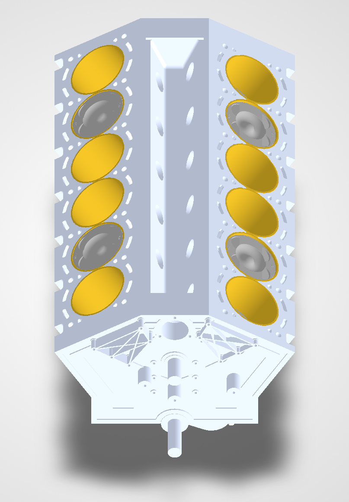
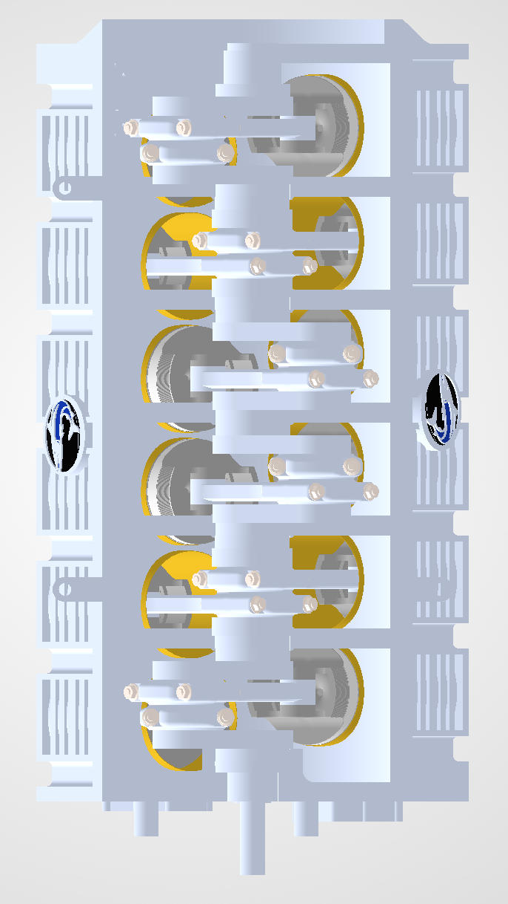
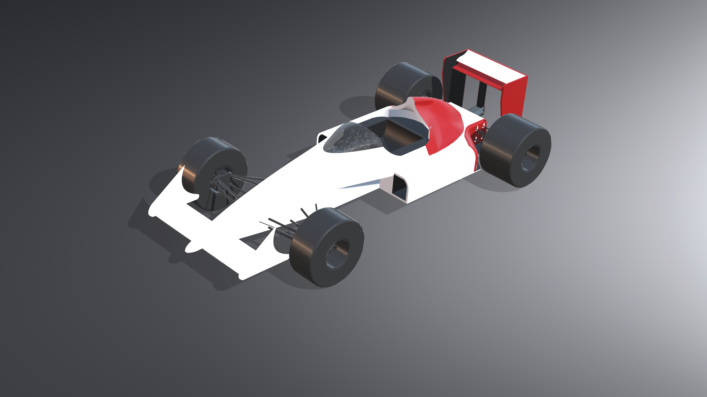
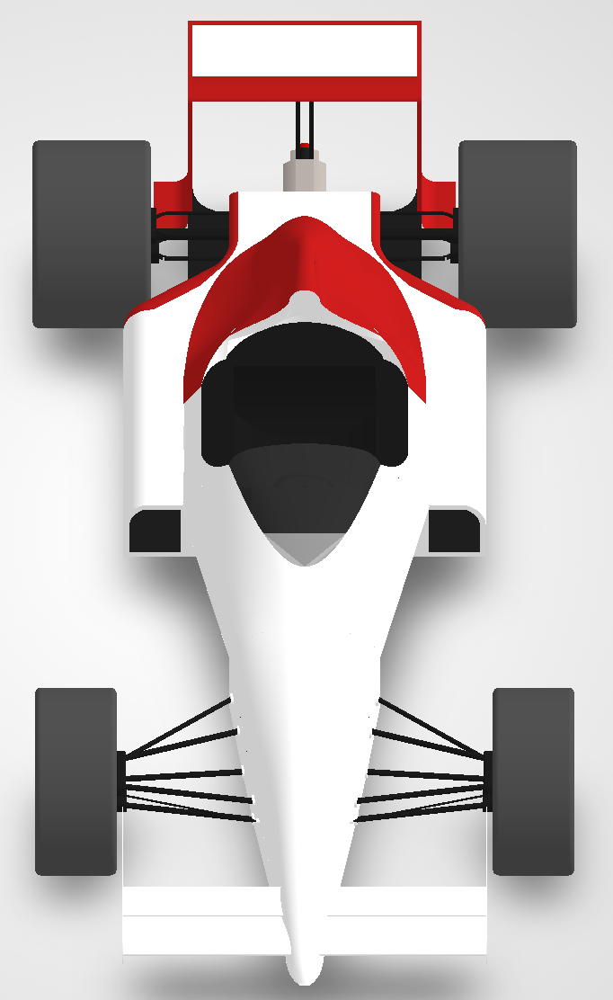

The purpose of these projects and why I chose to display them so prominently is to show the versatility in my work. While both of the projects are in the realm of automotive design they differ greatly in what skills they utilize. The first project V12 Project mainly utilizes rigid constraints and dimensions while the second project Formula car project uses far more creative problem solving and outside the box thinking. They are both good representations of my work and I am very proud of them, but more so I am proud of the unique and highly useful skills I learned while working on them. Both Projects are made in solidworks.
V12 Project


Formula car


This models is based off of Alain Prost and Ayrton Senna's 1988 McLaren - Honda 4/4. This car was an engineering marvel, during the 1988 F1 calender year the car won all but one race and secured all but one pole position. The car led 97.3% of laps during the season.
Explaination
The purpose of these projects and why I chose to display them so prominently is to show the versatility in my work. While both of the projects are in the realm of automotive design they differ greatly in what skills they utilize. The first project V12 Project mainly utilizes rigid constraints and dimensions while the second project Formula car project uses far more creative problem solving and outside the box thinking. They are both good representations of my work and I am very proud of them, but more so I am proud of the unique and highly useful skills I learned while working on them. Both Projects are made in solidworks.


.png)
.png)
_Camera_Default Camera.png)